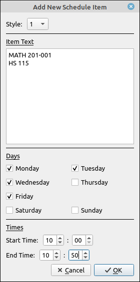
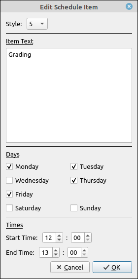
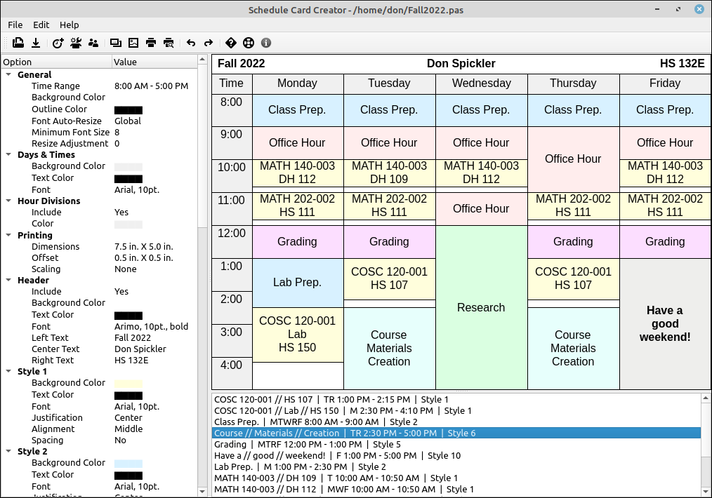

Constructing and Editing a Schedule¶
The schedule card is populated by adding schedule items to the list. Select Edit > Add New Schedule Item to create a new schedule item for the card. You can also use the toolbar button for this or Ctrl+A. When this is selected the following dialog box will appear for you to input a new item.

The style category is a simple drop-down selection of 1-10. This designates the style options that are used for the item.
The item text is free form text that will be displayed in the schedule. You may use as many lines as you would like. Note that text is not wrapped inside the schedule item. The fonts are resized so that the given text fits the available space. Hence you do not want the lines to be too long nor do you want a lot of lines for a time slot that is not very long.
The days of the week are check boxes for the days this event is happening. The schedule card will display Monday to Friday unless an event is scheduled for Saturday or Sunday and then these days will be added to the schedule card.
The start and end times are when the event starts and ends. These are to be input using a 24 hour clock. The display will be using a 12 hour clock.
Once the data is entered and OK has been selected, the new item will be added to the schedule. It will appear in the schedule item list at the bottom and appear in the schedule image. Note that in the schedule list all schedule items are on a single line and the line breaks are given by //. Also, a schedule item that is not within the starting or ending times will either be partially displayed or not displayed at all. The starting or ending times are not altered by the schedule item times.
To edit an item that is already entered you can double-click (or Ctrl+Click) the event in the schedule image. You will note that when you hover over the event it becomes “highlighted” with a cross-hatch pattern. You can also double-click the item in the listing at the bottom, hitting the enter key or selecting to edit from the menu or toolbar, with the item selected will also open the editor dialog. The editor dialog is the same as for adding a new item.

In addition to adding and editing items you can clone an item by selecting Edit > Clone Schedule Item from the menu or clicking the clone tool in the toolbar. This will create a copy of the selected item and then you can edit one of the clones with other settings. You can delete a schedule item by selecting it in the schedule item list and either hitting the delete key or selecting Edit > Delete Schedule Item from the menu. You can also remove the entire schedule by selecting Edit > Delete Schedule from the main menu.
Items that overlap in times will show up as red in the schedule item list. These should be edited so that there is no time overlap, or else the image of the schedule may be unpredictable. The program also offers standard undo and redo options to undo unwanted edits. The undo and redo history stores only the schedule items and not the options, these are kept separate by design.
The other input is for the header area. On the left in the options window there is a Header section. Two turn the header on and off simply double click the Include item under Header. You can put in a left, center, and right single line of text. As with the schedule items you will want to keep these short. To add in text to any of these sections double-click the Left Text, Center Text, or Right Text options below the Header title. A small dialog box will appear for you to add or edit the text in those sections. We will discuss the other layout options in a separate section of this help system. Once you are finished entering the items (and adjusting the options to your liking) your screen will look like the following. At this point you are ready to save and/or print the card.
